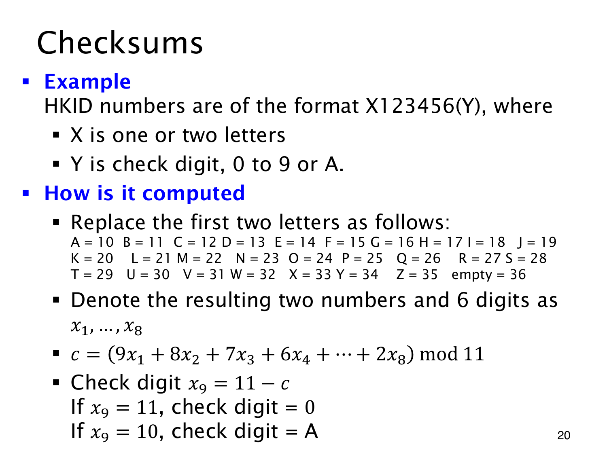

L1.13 · 第 20 页讲解原文
查看这一页课件

校验位补足模 11 的加权和
checksum（校验码）的计算目标，是让号码主体的加权和与校验值相加后被 11 整除。
按本页香港身份证号码的课件规则，主体有一或两个字母、六个数字；括号中为校验字符 0 至 9 或 A。字母 A 至 Z 编为 10 至 35，缺少的首字母位置记作空白 36。两字母位置加六数字形成 x1,…,x8；单字母时，先放空白，再放字母。
计算
S=9x1+8x2+7x3+6x4+5x5+4x6+3x7+2x8.
令 c=Smod11，校验值取 x9=(−c)mod11，便有 S+x9≡0(mod11)。课件用 11−c 表示，算到 11 就记为 0，算到 10 则用 A。
仅以 A123456 演示：首两项为 36,10，于是
S=36⋅9+10⋅8+1⋅7+2⋅6+3⋅5+4⋅4+5⋅3+6⋅2=481.
余数为 8，所以校验值为 3。这只检查算术一致性，不能据此认定号码真实存在或属于某人。